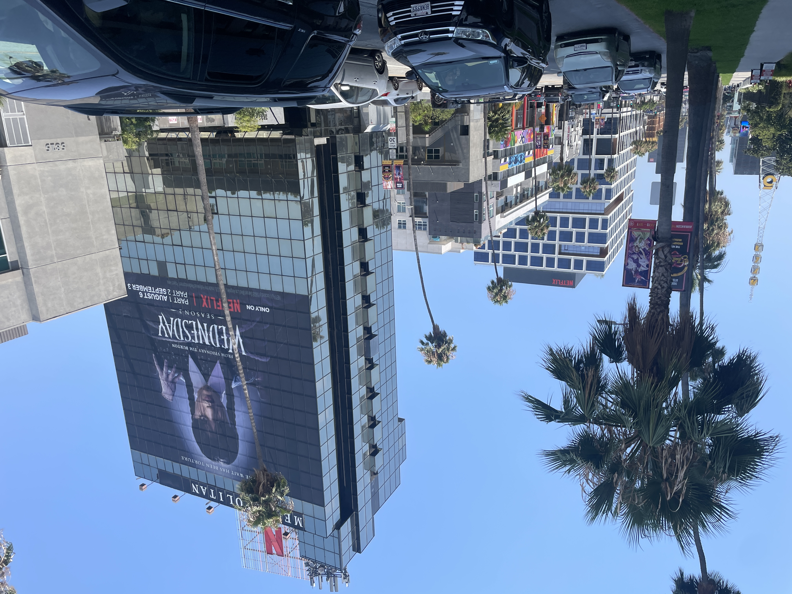
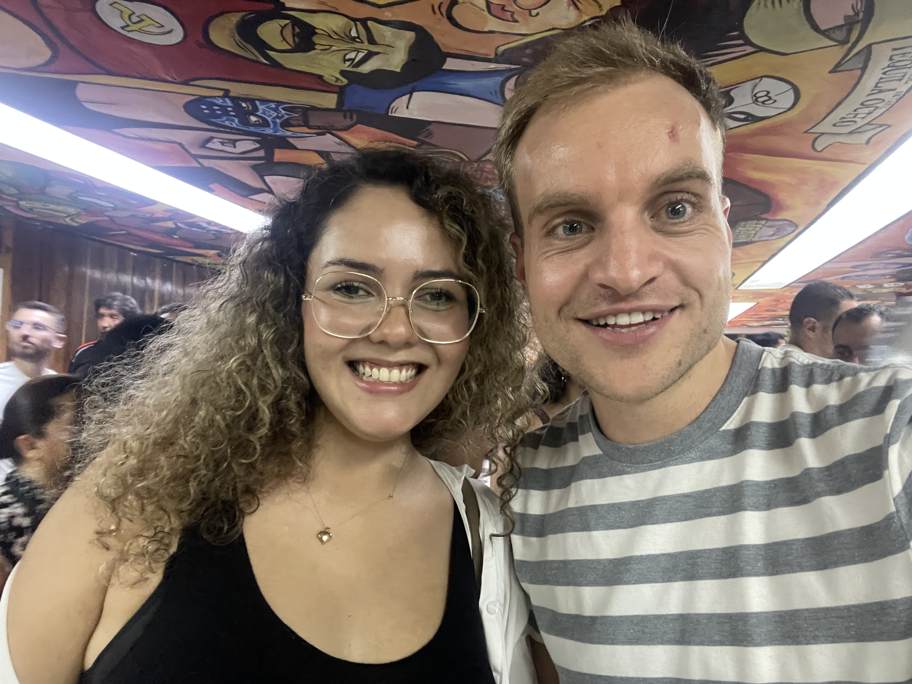
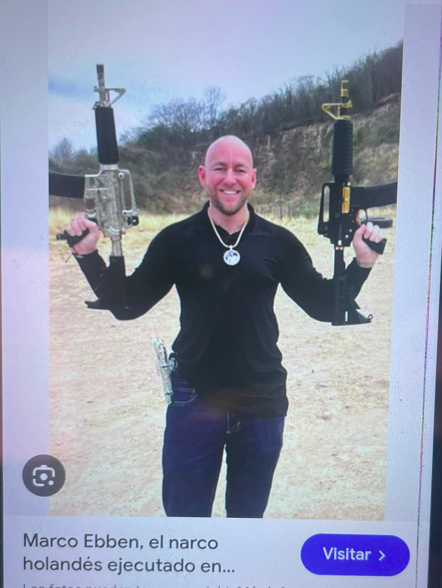

24 In the hands
of the cartels
The computer break,
backpacking adventures and
American glory.


August 16, Ventura, California. 28 degrees celcius.
Hi everyone, a blog post I'm typing from the garden of an elderly couple where I'm staying for four days. They're very sweet people, Jim and Suzan, whom I met in Cancun, Mexico, during a tour of the Yaxchilan ruins. They invited me to visit their town of Ventura, California, near Los Angeles on the Pacific Ocean. I'm on my way to the Burning Man festival in Nevada. What a super exciting few weeks I've had. So much has happened in such a short time that you already know filling this blog won't be a problem. Jim and Suzan took me to the house where Johnny Cash lived 10 years ago. It's my idol, and it symbolizes seeking adventure: "Walk the line." It's so cool to see where he lived, and we're playing a few of his records. It's a very special experience. Especially after all that backpacking, it's a cool twist to hear from older people about life here in America. We talked about Trump, of course, the homeless on the streets, the fentanyl drug problems, and all the tensions in the world. They took me whale watching, and we spotted many dolphins and humpback whales. A wonderful experience. Suzan is a nature guide and knows a lot about them. Sometimes a whale displays its large fluke, a spectacular sight, but unfortunately, that also means it dives to the bottom and won't be visible for a while. Jim also knows a lot about American history, from the moment the first American set foot on the island to American independence in 1722 and the Civil War. Places that seemed like a dream to me as a child, like the world of Grand Theft Auto, Venice Beach, and Hollywood, can be admired in real life here in Los Angeles. It turns out the famous brand Patagonia even has its headquarters here in Ventura. Although I still feel like I did two years ago, thinking, "As long as it's not too expensive," about everything, I bought a nice cardigan and I'm thrilled with it. On my last morning, Jim showed me the launch of Elon Musk's Starling satellite on his laptop. A little later, we walked outside and saw that same rocket ascending into space on the horizon.
 All of America, it's an incredible experience. I'm so glad I got to see it. The people are so friendly, approachable, and patient. When I crossed the border from Tijuana, Mexico, to San Diego, I immediately noticed the difference in culture and wealth. The billboards with the faces of high-status people. The Land Rovers and Porches speeding by. And especially the magnificent infrastructure, combined with the beautiful beaches, is a truly wonderful new experience. San Diego, the first city I visited in America, immediately captivated me. Everything was suddenly a lot more expensive, but it was worth it at that moment, because after all that time, I could finally move around freely again, without fear of danger, without a hat or sunglasses, and especially without social awkwardness. In San Diego, the Padres' baseball game had just started, so I was in a packed subway with fanatical fans. I took the tram to a sort of City College, from where you could enjoy a lovely walk through the woods. People have Fatbikes and all kinds of scooters. Everything is so well-marked, everything is well-thought-out, sidewalks, benches to sit on, it's truly incredible to experience something like that. Lawns are perfectly manicured, no less, by mostly Mexican workers. From the hill, I walk towards La Jolla beach. There you have that quintessential American coast with golf courses, expensive cars, and a stunning beach. I don't know a place on earth where the quality of life seems as high as here. A quality of life that is simply unbelievable. How wonderful it would be to live here.
All of America, it's an incredible experience. I'm so glad I got to see it. The people are so friendly, approachable, and patient. When I crossed the border from Tijuana, Mexico, to San Diego, I immediately noticed the difference in culture and wealth. The billboards with the faces of high-status people. The Land Rovers and Porches speeding by. And especially the magnificent infrastructure, combined with the beautiful beaches, is a truly wonderful new experience. San Diego, the first city I visited in America, immediately captivated me. Everything was suddenly a lot more expensive, but it was worth it at that moment, because after all that time, I could finally move around freely again, without fear of danger, without a hat or sunglasses, and especially without social awkwardness. In San Diego, the Padres' baseball game had just started, so I was in a packed subway with fanatical fans. I took the tram to a sort of City College, from where you could enjoy a lovely walk through the woods. People have Fatbikes and all kinds of scooters. Everything is so well-marked, everything is well-thought-out, sidewalks, benches to sit on, it's truly incredible to experience something like that. Lawns are perfectly manicured, no less, by mostly Mexican workers. From the hill, I walk towards La Jolla beach. There you have that quintessential American coast with golf courses, expensive cars, and a stunning beach. I don't know a place on earth where the quality of life seems as high as here. A quality of life that is simply unbelievable. How wonderful it would be to live here.
Things have been incredibly chaotic and busy at work, with little success and a lot of hard work, but now it's time to put it all aside for a while and enjoy these special moments. I'd secretly hoped I could use the program I'd written during this trip to automatically run my AI training. But the computers aren't making any profit, and I decide to turn them all off for a while, which is actually quite liberating. Even though it requires minimal effort, it still keeps you busy. I'm helping Karim, the owner of the group I work for, build a website, which is almost a hobby on the side. The ideal I'd like to achieve, where my free time and work are nicely balanced. That's how I've been living these past few weeks. I've immersed myself in the backpacker lifestyle of San Diego and Los Angeles. Sang karaoke, had a few good, deep conversations here and there, and worked on the website in between. I felt awful because life is so free that sometimes I really don't know what to do next, but I mostly enjoyed the breeze and the peace, the politeness of the people. It really allowed me to recharge for the next phase of my expat life, which could easily be upon me.


 A month earlier, when I closed the door behind me in my shared apartment in Mexico after living there for four months, it triggered something. It was a very chaotic and stressful period that I might look back on with a smile later, but certainly not at that moment. I had some backpacking in Mexico waiting for me because, well, all I knew was that I had to be in Nevada on August 23rd for the Burning Man Festival, but the entire period in between was still completely open. I love overland travel, so the bus to Guadalajara, heading towards northwestern Mexico, was my first stop. I took the eight-hour bus during the day because I wanted to see some of the country. You encounter a lot of agave plants, which are used to make mezcal, and there's also a village called Tequila, which attracts many tourists. Guadalajara was much quieter than Mexico City, and people seemed more attentive. The Leveli Hostel was fantastic, and Johanna, a cheerful German woman I'd met in Mexico City and who was currently living in Guadalajara, showed me around a few things, which was a huge plus. We attended a language exchange event, where I had to strain to follow the conversations at the German table. After spending so much time focused on progressing on the computer, I was naturally curious to see if I was still appealing. I didn't necessarily need to meet the woman of my dreams, but now, at 32, I realized I'm not the youngest anymore and that I'll have to take the plunge someday. At that language exchange, I got to chat with a woman named Dulce, who was from Guadalajara. The next day, we sat in a lovely little café, chatting about all sorts of things. It had been ages since I'd last chatted with someone like that. Dulce was a feisty but incredibly sweet Mexican girl who took me to the far corners of Guadalajara. We visited the vibrant Tlaquepaque neighborhood and even saw a wrestling match in a wild arena. It was a fantastic experience to go out like that with someone from there.
A month earlier, when I closed the door behind me in my shared apartment in Mexico after living there for four months, it triggered something. It was a very chaotic and stressful period that I might look back on with a smile later, but certainly not at that moment. I had some backpacking in Mexico waiting for me because, well, all I knew was that I had to be in Nevada on August 23rd for the Burning Man Festival, but the entire period in between was still completely open. I love overland travel, so the bus to Guadalajara, heading towards northwestern Mexico, was my first stop. I took the eight-hour bus during the day because I wanted to see some of the country. You encounter a lot of agave plants, which are used to make mezcal, and there's also a village called Tequila, which attracts many tourists. Guadalajara was much quieter than Mexico City, and people seemed more attentive. The Leveli Hostel was fantastic, and Johanna, a cheerful German woman I'd met in Mexico City and who was currently living in Guadalajara, showed me around a few things, which was a huge plus. We attended a language exchange event, where I had to strain to follow the conversations at the German table. After spending so much time focused on progressing on the computer, I was naturally curious to see if I was still appealing. I didn't necessarily need to meet the woman of my dreams, but now, at 32, I realized I'm not the youngest anymore and that I'll have to take the plunge someday. At that language exchange, I got to chat with a woman named Dulce, who was from Guadalajara. The next day, we sat in a lovely little café, chatting about all sorts of things. It had been ages since I'd last chatted with someone like that. Dulce was a feisty but incredibly sweet Mexican girl who took me to the far corners of Guadalajara. We visited the vibrant Tlaquepaque neighborhood and even saw a wrestling match in a wild arena. It was a fantastic experience to go out like that with someone from there.
I thought it would be wonderful to visit the Baja California Peninsula, a small peninsula off the Mexican mainland where many Americans vacation, and known for its beautiful scenery, including cacti with their magnificent spiky arms. To get there, I first had to take a bus to the coastal town of Mazatlán, from where I could cross over by boat to La Paz. After another good five hours on the bus, it was clear that I could forget about catching the boat. We were almost in Mazatlán. I was sitting on the bus, lost in thought, when it suddenly stopped. A man in the aisle wearing flip-flops and tattooed hands tapped me and asked for my passport. It hadn't dawned on me that this man might be a drug cartel member. I heard later, and I completely forgot about it when I booked this bus, that we were visiting the territory of the notorious Sinaloa Cartel, led by the now-imprisoned drug lord "El Chapo" and his 25 children. Apparently, this cartel also included a notorious Dutchman, "Marco Ebben," nicknamed "El Holandes," whom they killed last year in a suburb of Mexico City. I suddenly noticed that the man behind the man in flip-flops was wearing a balaclava, and I realized something was wrong. I had to come with them, and they had my passport. Desperate, I asked the people on the bus what was going on, but even the driver didn't do anything. I was completely abandoned to my fate. The lawlessness of this region, where the police weren't in charge, but the cartels were. I had to get into a car with two masked men, and next to me sat another disheveled young man who was thoroughly searching through the photos on my phone. Apparently, a fierce war has recently broken out within the Sinaloa Cartel, and in a town further away, Culiacan, bullets are flying. A thick smoke of weed hangs in the air in the car. I've never been so scared in my life. The men won't reveal anything about their plans; I fear a gun or a knife. I have all my valuables with me, but even more so, I fear for my life. The adrenaline helps me stay calm, and it seems I know the right things to say in Spanish. After a moment of deathly silence, the tension calms. Through the front window of the car, they interrogate another man from the bus. It's pure Russian roulette. They're apparently done with us. The other passenger from our bus has to pay 1,000 pesos, which is equivalent to $50, and they decide to make me pay the same. I can't wait to give them the money. Having escaped the shock of my life, I get out of the car. I'm allowed to return to the bus. Everyone on the bus is now rushing to my aid and is, of course, incredibly curious about what happened. In Mazatlan, at the bus station, I need to grab a bite to eat, and we chat with a group of people from the bus about what just happened. Everyone was stunned, and many people say they haven't experienced anything like this in years.
Still, this event doesn't reflect the journey I'm on. I'm a bit unlucky missing the boat, and the flight I hastily buy turns out to be five days later upon arrival at the airport, but being forced to stay in Mazatlan for five days isn't so bad. I have a lovely, simple Airbnb right on the beach to chill out. Then I take the flight to La Paz, Baja California, and stay in a cozy hostel. The hostel is in the middle of renovations, but you can tell the staff is genuinely making an effort to ensure you have an unforgettable time. Only on the third day does something unpleasant happen again. A Mexican man from Tijuana enters our four-person bedroom, along with a French girl who don't know each other yet. We have a nice chat, and after last week's bus incident, it's good to reconnect with some people. But then, just as I'm closing my curtains because I still have some work to do, the Mexican man suddenly starts a phone call, and the man on the other end, a scammer, starts asking who the Mexican guy is in the room with. "I'm with Jorrit," he says. "Give him the phone!" the scammer shouts. I break out in a sweat, wondering who should talk to me when I don't know anyone here and am also stuck in a hostel bed. In a short time, the pressure mounts enormously. "You have to show your ID and give me your phone number," says the Mexican guy in my room. The scammer on the other end starts yelling furiously. And even the French girl picks up her phone and shows me its screen, which reads, "Just do it, it's the police!" I have no idea if my roommates are in on the plot, but I know one thing for sure: This isn't right. I'm being pressured into handing over my personal information, and all I can think about is the incident on the bus with the cartels a week ago. I run to the hostel reception and, completely distraught, explain that they're trying to blackmail me over the phone into giving up my information. I see the exact same fear in the receptionist's eyes that I saw in everyone on the bus last week. She also doesn't dare enter the room because the phone call is still ongoing—who knows who they're talking to? Someone from the cartels, or perhaps a malicious person near the hostel? When I go to get my things from the room, the Mexican and the French woman are still busy talking to the scammer, and it doesn't sound good. Downstairs at the reception, we call the police. Just as we manage to get hold of the police, the Mexican roommate comes downstairs, pretending to be completely surprised that anything is wrong. I'm standing there barefoot, clutching my hastily gathered backpack. I realize this can only end badly. Either the police show up and we'll spend hours filling out forms and chatting. Or who knows what happened with that phone call. I fill my lungs and blurt out every Dutch swear word I can think of; I'm so angry. Even in my own room, people keep pushing me to give something up when I've already told them three times that I simply won't. I leave. A Japanese restaurant around the corner receives me, completely distraught. Eventually, I manage to book a new Airbnb. But of course, I don't trust anything anymore. I abandon my desire to visit the iconic cacti by land and fly to Tijuana, where, surprisingly, I experience a very safe and welcoming atmosphere. This is what makes traveling here in Mexico so incredibly difficult for me. The will to trust people is there, but a handful of people who use a completely unexpected moment to extort money makes it impossible to have a pleasant vacation here. Disappointed that it ended this way, but also relieved, I arrive at the Mexican-American border and see the great barbed-wire wall that has been so widely discussed worldwide. I step into a different world. I'm so glad to be here and that I no longer have to constantly distrust everyone around me.